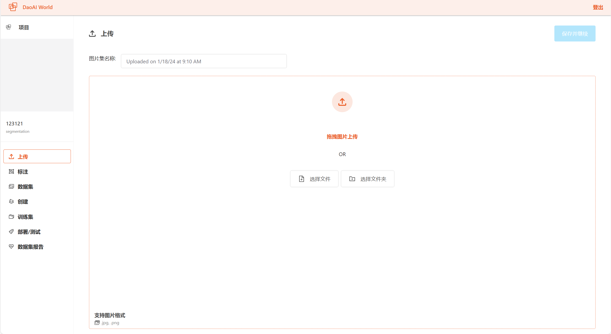

开始一个项目
DaoAI World
一个项目理应包含需要被标注的图片。并且所有同类型的标注图片只存在同个项目内。图像被标注完成后，可以用它们可以生成一个包含时间和标注内容的训练集，并可以用你选择的配置进行扩充和处理。项目具有名称、类型(例如:对象检测)和标注组,有关更多信息,请查看创建项目
创建项目
首先,进入到DaoAi World首页,然后,点击”创建新项目”:

您将被要求填写:
- 项目类型。以下是各种类型的概要。
实例分割:在像素的等级中查找图像中实例的位置
标注关键点:查找实例及其关键点在图像中的位置,通常用于确定物体的姿态
项目名称:项目的名字
待检测的物体名称:汇总检测物体的标签
填写完成后点击”创建项目”以建立一个项目
上传数据
您可以上传待标注或已标注过的图像,用于实例分割与标注关键点
如何添加数据
您可以通过使用**web页面**的上传方式向DaoAI World账户中添加图片数据(建议单次小于1000张)
请在上传数据前确认已经创建一个项目。在首次创建项目时，系统会要求你上传图像素材

如果您已经创建了项目,请点击栏目中的**选择文件**或选择文件夹以上传图片